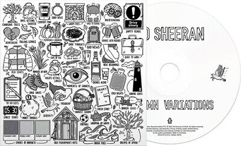

ED SHEERAN: A Music Portfolio
A British singer-songwriter born in February 17, 1991 at Halifax, West Yorkshire, England known for his genre-crossing style infused with elements of folk, rock, Rhythm and Blues, pop, and hip-hop.
Read more...
LATEST ALBUM
Autumn Variations
"Autumn Variations" focuses on a specific season of his life. In an interview with CBS, Sheeran said the album was created during the time his wife, Cherry Seaborn, who was pregnant with their second child, was diagnosed with cancer and when he lost his best friend Jamal Edwards.